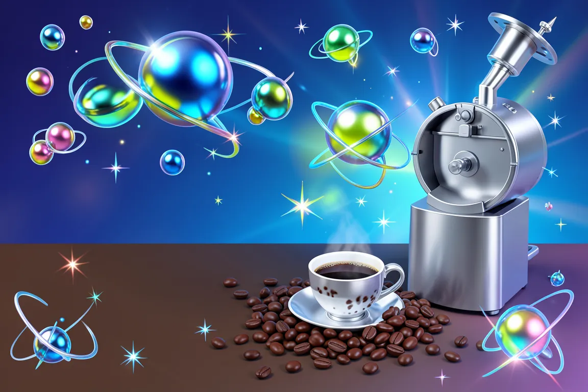

internet · 1997–2004 · also: Millennium Futurism, Cyber Y2K, Techno-Optimism 2000, Web 1.5 Chrome
Chrome and translucent plastic, bubble shapes, silver and electric blue, and small pixel and tech type on cold gradients. It came from the dot-com boom and the first iMac in 1998, and it pictured the year 2000 as a clean, shiny future.

Core thesis
Technology is friendly and the future is shiny, so an interface should look like a new gadget that is already finished.
Design principles
Fill large areas with vertical or radial gradients that run from a pale tint to a saturated hue, over a 40% to 60% lightness range.
Make buttons and badges as glossy pills with a radius of 999px and a white highlight that covers the upper 45% of the shape.
Use translucent plastic panels at 55% to 80% opacity with a 1px white inner highlight and a coloured tint.
Place chrome, globe, orbit and star motifs behind the content, at 15% to 40% of the viewport width.
Pair a wide rounded display face with a small 10px to 12px tech sans or pixel face for labels and metadata.
Build the palette from silver, ice blue and one electric accent, and add one acid hue for warnings and tags.
Add small functional detail: serial numbers, version tags, tiny arrows and 1px dividers in a light grey.